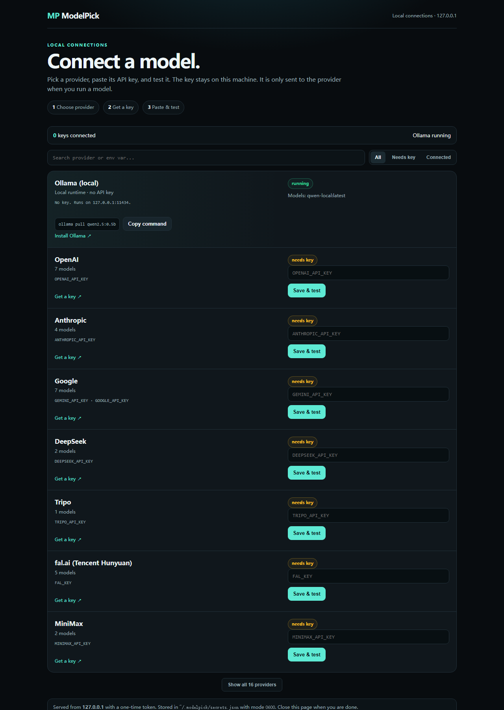

Install, add a key,
connect your agent.
This is the whole path. The key stays on this machine. The agent gets tools, not the key. Text models execute today; image, video, 3D, and audio recommendations work without execution.
Install the CLI and MCP server
Node.js 20+. No build step, no runtime dependencies.
npm install -g modelpickNo admin rights or no global install? Use npx:
npx --yes --package=modelpick@latest modelpick --versionnpm install modelpick inside a folder, the command is not global. Use npx modelpick there, or install with -g.Add one provider API key
Open the local page. Pick a provider, click “Get a key”, paste it, then “Save & test”.
modelpick keys --uiSupported for execution today:
| Provider | Env var | Status |
|---|---|---|
| OpenAI | OPENAI_API_KEY | text execution |
| Anthropic | ANTHROPIC_API_KEY | text execution |
| Google Gemini | GEMINI_API_KEY | text execution |
| DeepSeek | DEEPSEEK_API_KEY | text execution |
| OpenRouter | OPENROUTER_API_KEY | text fallback |
| Ollama (local) | none | text execution |
~/.modelpick/secrets.json (mode 0600). Environment variables win. The key is never accepted as an MCP tool argument and never printed by keys list.
Connect the agent once
Installing npm and adding a key is not enough. Each host needs to know the ModelPick MCP server exists. Run the command once, then restart the app.
Claude Code
Global MCP config + skill.
modelpick setup claude-code --global --writeRestart, then /mcp and approve.
Cursor
Global MCP config + skill.
modelpick setup cursor --global --writeRestart Cursor → Settings → MCP.
Codex CLI
Global MCP row + skill.
modelpick setup codex --global --writeRestart, then codex mcp list.
DeepSeek Harness
Profile-based MCP row.
modelpick setup dsh --global --write --profile desktopRestart DSH.
modelpick setup copilot or modelpick setup vscode inside the repository. Keys are shared; do not add them again per agent.Run directly or ask the agent
Use the CLI, or let Claude Code / Cursor / Codex call the MCP tools.
modelpick run "fix this bug" --task coding-agent
modelpick run "hello" --local
modelpick pick "3D sword for Unity" --jsonFor code, the main agent should compress the node context first. Pass system, messages, and context to run_model. ModelPick enforces the token budget and returns a context report; it does not silently truncate.
modelpick run "fix the race" --task coding-agent --context-file diff.patch --output json --schema schema.jsonVerify
modelpick --version
modelpick keys list
modelpick doctor
claude mcp list
codex mcp listExpected: version 0.2.2 or newer, at least one configured key, Ollama detected if installed, and ModelPick visible in the host MCP list.